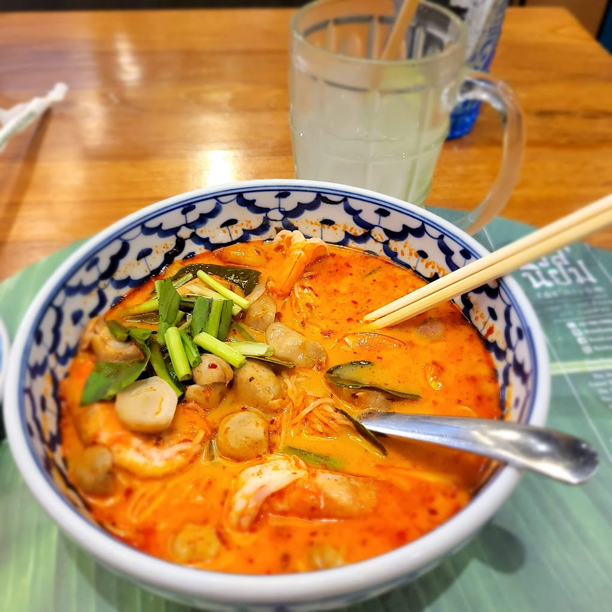

Back to Main Page
Tom Yum Soup

Description
Being from Thailand, I've grown up having Tom Yum Soup.
It is a hot and sour soup where the iconic flavours come from 3 herbs: lemongrass, galangal, and makrut (kaffir) lime leaves.
But last year everything changed when I discovered the Tom Yum Soup at one of my favourite Thai restaurants, Ros Niyom, which when translated means "Popular flavours".
And boy oh girl is this soup popular there or what. Every person that has visited Thailand recently has been taken there by me and everyone seems to not want it to finish.
It is just incredible. A truly remarkable way the restaurant has found to bring the flavours out.
Oh and this I'm talking about the vegetarian version!
Ingredients
- Lemongrass
- Chilies
- Lime juice
- Coconut milk
- Mushrooms
- Galangal
- Tom yum paste
- Cherry tomatoes
- Green onions
- Shallots
Steps
- Bring the water to a boil in a medium-sized pot.
- Meanwhile, smash the lemongrass lightly with the back of your knife or a pestle and cut it into 3 or 4 pieces to fit in your pot.
- Add the lemongrass, shallots, galangal, lime leaves and chopped tomato to the water and boil for 5 minutes or until you have a fragrant, herbal broth. Smash the tomatoes with your spoon as they cook so that they meld into the broth.
- Add the soy sauce, sugar, chili paste and mushrooms. Bring the soup back to the boil then turn off the heat. If you’re using button mushrooms, you may want to boil the soup for a couple of minutes until they’re soft.
- Add the lime juice and taste the broth. Adjust the seasonings to reach a balance of salty, sweet, spicy and sour, if necessary. Finally add the cherry tomatoes.
- Serve the soup into bowls, avoiding the lemongrass, galangal and lime leaves as they are not edible. Garnish with some fresh cilantro.
Back to Main Page